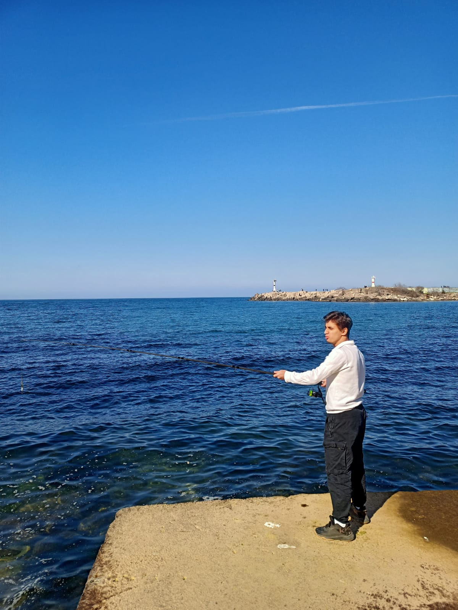
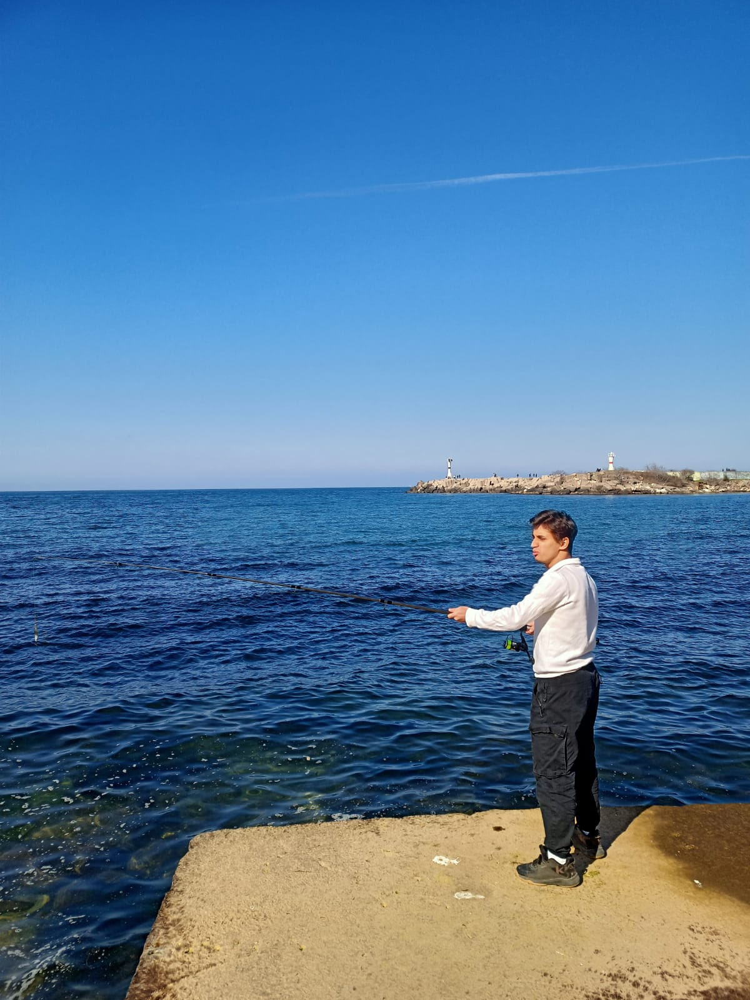

Akçakoca'da kamp yaptık güzel bir anıydı balık falan tutmaya çalıştık ve aç döndük.Akçakoca'da kamp yapmak, doğayla iç içe olmak ve şehir hayatının stresinden uzaklaşmak için ideal bir seçimdi. Çadırlarımızı kurduktan sonra, tertemiz deniz havasını ciğerlerimize çekerek kamp alanını keşfetmeye başladık. Etrafımız çam ağaçlarıyla çevriliydi ve kuşların cıvıltıları huzur verici bir atmosfer yaratıyordu.
Akçakoca'da Unutulmaz Bir Kamp Deneyimi
Akçakoca'nın masmavi sularının ve yemyeşil doğasının kucağında, unutulmaz bir kamp deneyimi yaşadık.
Şehir hayatının karmaşasından ve stresinden uzaklaşmak için ideal bir ortam sunan bu güzel sahil kasabası, doğayla iç içe olmak isteyenler için adeta bir cennet köşesi gibiydi.
Güneşin ilk ışıklarının denizle buluştuğu bir sabah, heyecanla çantalarımızı arabaya yerleştirdik ve Akçakoca'ya doğru yola koyulduk.
Yolculuk boyunca pencereden uzanan manzara, sanki bize yaklaşan maceranın haberini veriyordu.
Varış noktasına ulaştığımızda, tertemiz deniz havası ciğerlerimize doldu ve şehir hayatının yorgunluğunu üzerimizden atmamızı sağladı.